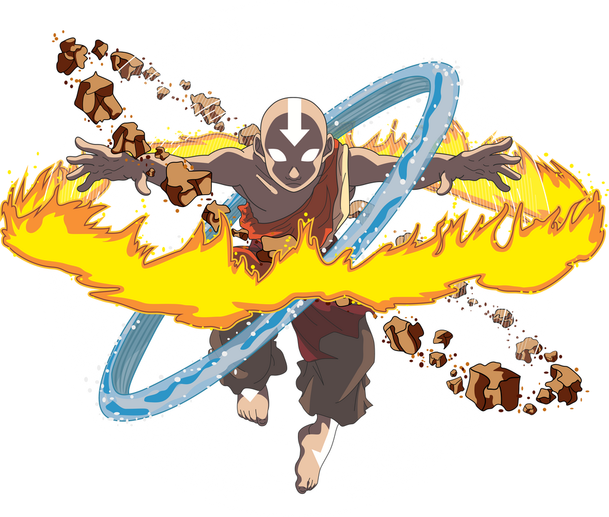
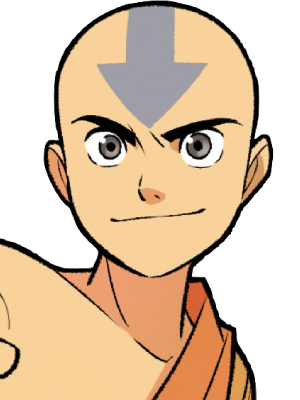
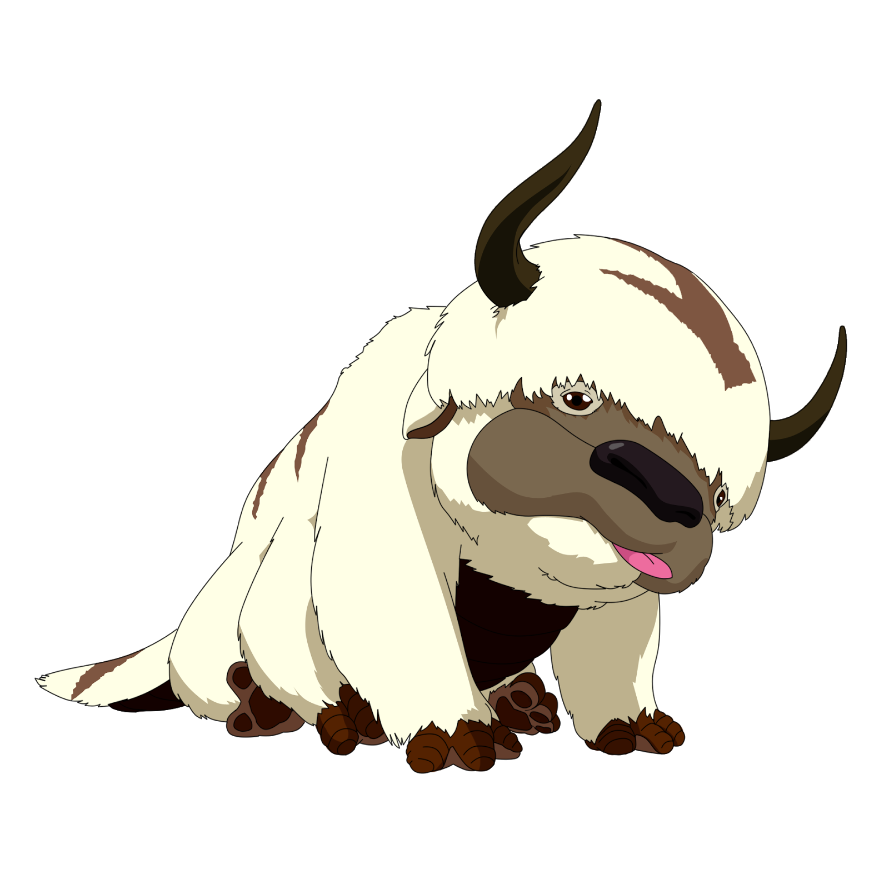

Aang es el último maestro aire y el Avatar destinado a mantener el equilibrio entre las cuatro naciones. A pesar de su gran responsabilidad, sigue siendo un niño lleno de curiosidad y alegría.
Katara, una maestra agua del Polo Sur, es una de sus mayores aliadas. Su determinación y empatía la convierten en el corazón del equipo.
Sokka, hermano de Katara, aporta ingenio, estrategia y un toque de humor. Aunque no controla ningún elemento, su inteligencia es clave en cada misión.
Toph, una poderosa maestra tierra, revolucionó su elemento al aprender a “ver” a través de las vibraciones del suelo.
Zuko, príncipe de la Nación del Fuego, comenzó como enemigo, pero su búsqueda de honor lo llevó a convertirse en uno de los aliados más importantes de Aang.
A continuación, una tabla comparativa de los personajes principales y sus habilidades:
| Personaje | Nación | Elemento | Rol |
|---|---|---|---|
| Aang | Nómadas Aire | Los cuatro | Avatar |
| Katara | Tribu Agua | Agua | Sanadora / Maestra |
| Sokka | Tribu Agua | Ninguno | Estratega |
| Toph | Reino Tierra | Tierra | Maestra |
| Zuko | Nación del Fuego | Fuego | Aliado / Redención |
